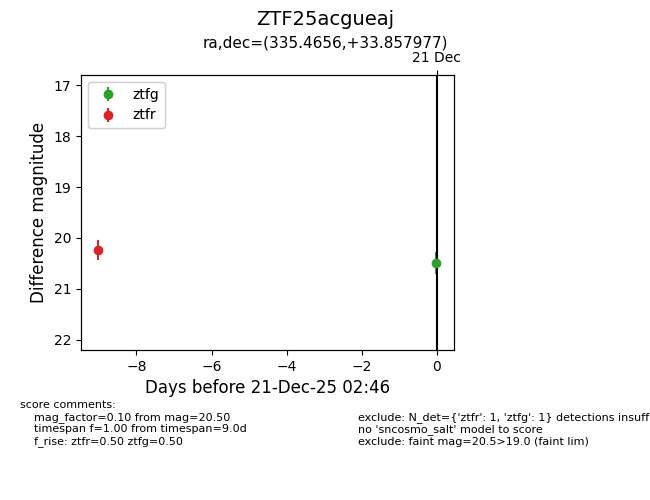
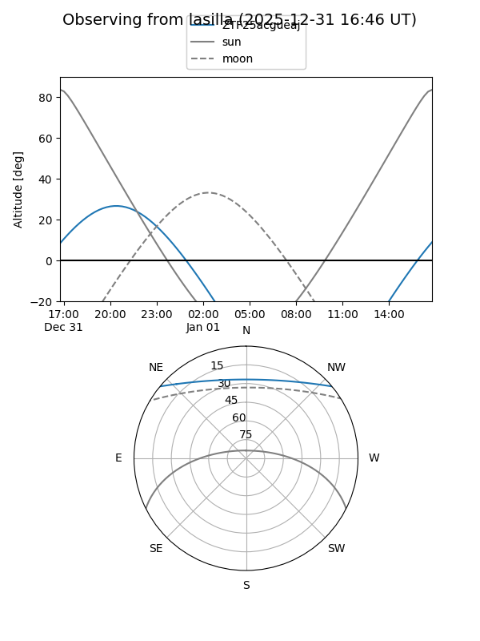
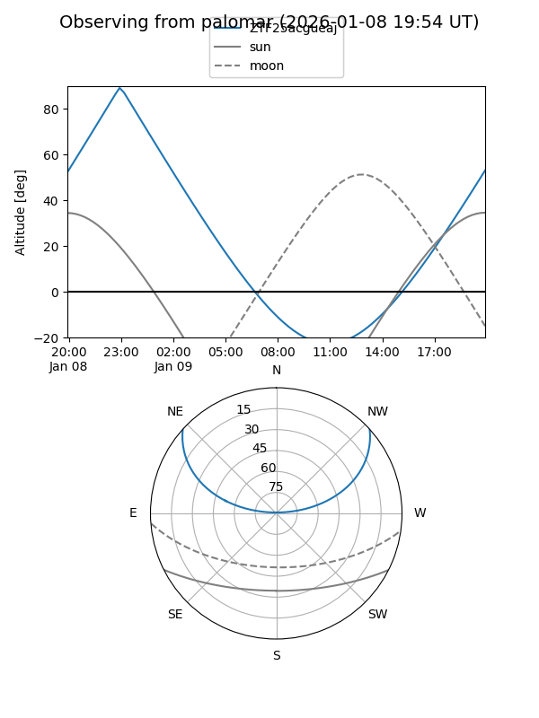

ZTF25acgueaj
Target ZTF25acgueaj at 2026-01-09 12:49
Aliases and brokers:
FINK: link
Lasair: link
ALeRCE: link
alt names
ZTF25acgueaj (ztf,fink_ztf)
Coordinates:
equatorial (ra, dec) = 335.4656,+33.85798
equatorial (HMS+DMS) = 22:21:51.74,+33:51:28.72
galactic (l, b) = (90.5977,-19.45866)
Flags:
Photometry:
last ztfg=20.50, ztfr=20.24
1 ztfg, 2 ztfr detections
Lightcurve

Visibility


Additional plots